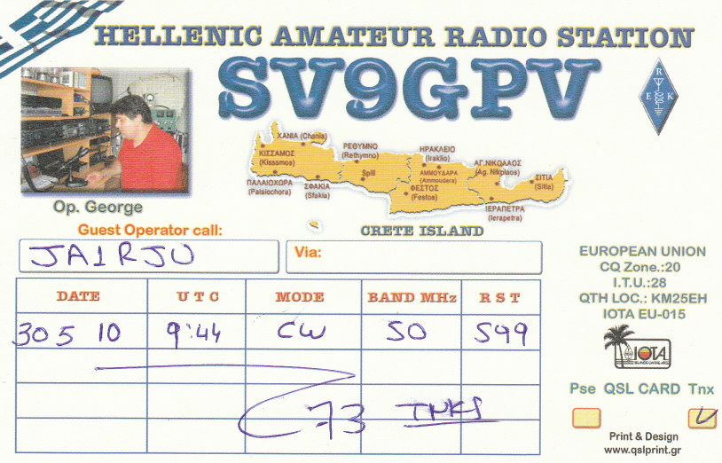

Flash ! DX


 

|
|
|
|

|
|
|
[Back Issue Jun.2023]
TIME:UTC(-09:00JST)
30.Jun.2023(15:00d)
--------------------------------------------------------------------------------
{DX(FT8/FT4=50.313/323MHz)=NA/EU/Pacif/Asia/JA's.../JA1/2/3/4/5/6/JS6-JA7/8/9/0
--------------------------------------------------------------------------------
06:03 K7CW/-05=JA's 06:05 W7FI/-10=CQ & JA's 06:11 K6KLY/-14=CQ & JA's
06:21 NL7S/-17=QSO & JA's 07:22 3D2AG/-12=CQ & JA's
+
* Open to other station & area
+
02:52 UN7DA/JA1 05:52 KU7Z/JA7 05:54 WA7PVE/JA7 05:57 AH0U/JA1
06:02 KL7HBK/JA1 06:26 VE7DAY/JA7 06:36 K5XI/JA1 08:12 4L7ZS/JA3-4
08:15 SV2BFN/JA3 08:26 YO7LLH/JA5 08:28 US0KW/JA5 08:33 EA6SX/JA5
08:38 YT3PL/JA3 09:11 Z37CXY/JA5 09:15 DU7/PA0HIP/JA6 09:30 UB7K/JA5
+
--------------------------------------------------------------------------------
{DX(FT8=50.313/323MHz & Q65=50.275MHz) Report from Kochi(PM63)= TNX JA5FFJ}
--------------------------------------------------------------------------------
0523 UX1UA/-15 0528 D1DX/-20 0534 UW2ZM/-17 0538 UX3IW/-20
0545 UY7VV/-15 0547 UT5QF/-15 0555 UT5UT/-18 0600 IK0FTA/-06
0620 UN3G/-20 0629 K6KLY/-11 0742 3D2AG/-15 0744 HA8CE/-13
0800 SV2BFN/-13 0827 YO7LLH/-18 0828 US0KW/-09 0830 UR9QQ/-21
0857 UN8G/-18 0911 Z37CXY/-18 0929 UB7K/-19
--------------------------------------------------------------------------------
TIME:UTC(-09:00JST)
29.Jun.2023(15:00d)
--------------------------------------------------------------------------------
{DX(FT8/FT4=50.313/323MHz)=NA/EU/Pacif/Asia/JA's.../JA1/2/3/4/5/6/JS6-JA7/8/9/0
--------------------------------------------------------------------------------
07:27 EX8MLE/-18=CQ & JA's 07:44 UN3G/-09=CQ & JA's 07:50 TA4/PE2M/-18=JA's
07:57 IS0AWZ/-15=JA's 08:18 OE3DSB/-13=CL UN7LV 08:28 EA6SX/-14=CQ & JA's
08:26 EA6Y/-20=CQ & JA's
+
* Open to other station & area
+
01:58 W6TK/JA1 05:56 UT7UA/JA5 05:57 UR0MC/JA5 05:57 UT7UJ/JA3-4-5-6
06:35 UX1UA/JA4 06:40 UT5UCR/JA4 06:56 II0ESL/JA6 07:45 4L7ZS/JA1
07:33 IT9IPQ/JA7 07:36 RA3ZK/JA1 07:36 TA4/PE2M/JA3-4-5 07:36 SV2DSJ/JA7
07:37 SV3DCX/JA4 07:44 SV1LK/JA3 07:46 SM7CAD/JA7 07:49 SV1EDU/JA3
07:50 SV5DKL/JA3 07:52 4X4DK/JA4 07:53 IT9RZR/JA5 07:52 EA6SX/JA5
07:53 I6WJB/JA4 07:53 9K2YD/JA0 08:00 Z37CXY/JA6 08:00 LZ2PL/JA3
08:01 SQ7NSN/JA2 08:03 HA2NP/JA5 08:07 OE3DSB/JA4 08:07 R3OK/JA4
08:09 SV1DH/JA2 08:13 SP9HWY/JA7 08:16 DK1MAX/JA2 08:18 OK2ZAW/JA5
08:18 OK8QC/JA3 08:24 SV8MQP/JA4 08:25 CT1FPQ/JA5 08:31 F5PAC/JA4
08:38 OZ1ADL/JA4 08:55 HA1YA/JA5 09:42 YO3GTP/JR6 09:49 F5UKW/JA6
+
--------------------------------------------------------------------------------
{DX(FT8=50.313/323MHz & Q65=50.275MHz) Report from Kochi(PM63)= TNX JA5FFJ}
--------------------------------------------------------------------------------
0554 SV1DH/-09 0554 UT7UJ/-16 0556 UT7UA/-19 0556 UR0MC/-11
0700 EX8MLE/-15 0713 UX1UA/-18 0734 TA4/PE2M/-14 0736 SV3DCX/-14
0738 UN3G/-08 0749 EA6SX/-13 0753 IT9RZR/-14 0759 Z37CXY/-19
0800 4X4DK/-13 0804 IS0AWZ/-17 0806 SV5DKL/-18 0808 UY1HY/-13
0816 UT5UGR/-16 0816 OK2ZAW/-17 0824 EA6Y/-18 0841 SV2DSJ/-17
--------------------------------------------------------------------------------
TIME:UTC(-09:00JST)
28.Jun.2023(15:00c)
--------------------------------------------------------------------------------
{DX(FT8/FT4=50.313/323MHz)=NA/Pacif/Asia/JA's.../JA1/2/3/4/5/6/JS6-JA7/8/9/0
--------------------------------------------------------------------------------
09:06 W7FI/-17=QSO & JA's
+
* Open to other station & area
+
02:27 W7GJ/JA7 02:35 K7UVH/JA7 02:37 K7IM/JA7 07:54 N7UVH/JA1
08:09 VK4JST/JA1 08:45 3D2AG/JA8 09:48 VK8DR/JA8 09:56 FR4OO/JA1
10:13 ZS6WN/JA1-3 10:13 UN7AM/JA0
--------------------------------------------------------------------------------
TIME:UTC(-09:00JST)
27.Jun.2023(15:00c)
--------------------------------------------------------------------------------
{DX(FT8/FT4=50.313/323MHz)=SA/NA/EU/AF/Pacif/Asia/JA's.../JA1/2/3/4/5/6/JS6-JA7/8/9/0
--------------------------------------------------------------------------------
07:26 EA6VQ/-09=JA's 07:33 Z37CXY/-18=CQ=QSO & JA's 07:59 DK1MAX/-24=CQ & JA's
08:03 9H1PA/-21=JA's 08:23 F8FKI/-14=CQ & JA's 08:28 F5UKW/-20=JA's
08:30 DK8VR/-19=JA's 08:52 SP4K/-17=JA's 09:06 F6ECI/-21=JA's
09:07 DL6AMI/-17=CQ=QSO & JA 09:08 DK8NE/-06=JA's 09:10 DL3AT/-20=JA's
+
* Open to other station & area
+
02:53 CE2SV/JA7 04:10 JT1BV/JA3- 07:20 Z37CXY/JA8- 07:20 OH8MGK/JA2-0
07:24 UY1HY/JA8 07:27 UT7QF/JA1 07:37 EA3AKY/JA1-7 07:38 F5UKW/JA1-7
07:48 EA2XR/JA7 07:48 F5BZB/JA1-7 07:49 OH3SR/-JA1 07:54 HB9SNR/JA7
07:55 9H1PA/JA1 07:58 LA9VFA/JA0 07:59 DK5YA/JA1 07:59 OH2BPU/JA7
08:00 SM7CAD/JA1 08:01 OK1NP/JA1 08:03 OK2ZAW/JA7 08:15 EA3MD/JA1-7
08:18 EA3BS/JA1 08:27 DK2DB/JA1-7 08:32 DL2IAU/JA1 08:33 F5OYC/JA1
08:36 DL1IP/JA1 08:38 LX1JX/JA1-0 08:52 F5TMJ/JA1 08:58 DJ3TF/JA8
08:59 F5RD/JA9 09:05 F6FLU/JA2 09:06 YT3PL/JA7-8 09:12 SP2IQW/JA1
09:18 DL6CNG/JA1-0 09:18 DK5YA/JA0 09:20 YT5DM/JA8 09:22 DJ5FI/JA0
09:23 YT1Q/JA8 09:46 E73S/JA8
+
--------------------------------------------------------------------------------
TIME:UTC(-09:00JST)
26.Jun.2023(15:00d)
--------------------------------------------------------------------------------
{DX(FT8/FT4=50.313/323MHz)=NA/EU/AF/Pacif/Asia/JA's.../JA1/2/3/4/5/6/JS6-JA7/8/9/0
--------------------------------------------------------------------------------
02:22 UN7JX/-12=CQ 03:10 EX8MLE/-13=JA's 03:44 UK8OM/-13=CQ JA & JA's
04:36 UN3G/-15=JA's 04:44 UT7QF/-18=CQ DX & JA's 05:29 JT1BU/-05=JA's
06:08 LA7HJA/-14=CQ=QSO 08:34 3D2AG/-10=CQ(RH91) 10:49 UY7VV/-19=JA's
12:13 UN7LZ/-19=JA's 12:18 JT1NQ/-15=JA's
+
* Open to other station & area
+
03:29 XV1X/JA7 03:51 UN7NFB/JA2 04:09 W7FI/JA7 04:36 W7OUU/JA1
04:36 N0KM/JA1 04:36 AA5AM/JA7 04:37 KC9FFV/JA7 04:43 WR7X/JA7
04:57 UR6QA/JA7 04:58 UN3GX/JA1 05:07 9K2YM/JA7 05:10 LA7HJA/JA1-7-0
05:40 OH8LXT/JA2 06:08 ET3AA/JA7 06:17 LB8DC/JA1 07:39 SM5EPO/JA7
08:23 UW2ZM/JA7 08:28 UY7VV/JA7 09:36 UA0LQE/JA0 09:44 ES2AJ/JA4
10:15 UN7LZ/JA7 10:34 LZ7PL/JA1-7 10:40 UT6LX/JA1-7 10:41 UW2ZO/JA7
10:43 LZ2ZO/JA1 10:57 UX1UA/JA0 11:00 UR3CFC/JA1 11:03 UN7UGH/JA1
11:05 YO7FWS/JA1 11:06 UT4UWJ/JA1 11:06 YO3JW/JA1 11:07 SV9CVY/JA1-2
11:11 UT5AX/JA1 11:12 UT5ME/JA1 11:14 UR5WA/JA1 11:15 UV1IZ/JA1
11:18 SV5DKL/JA1 11:23 YO7FWS/JA1 11:27 TA2SUA/JA1 11:27 JT1NQ/JA1
11:35 UT8PFE/JA3 11:40 EA7L/JA2 11:42 UN1L/JA1 11:51 UN7RAC/JA1
11:59 TA2AEG/JA1 12:31 EA5RM/JA2 12:48 RD9D/JA2
+
--------------------------------------------------------------------------------
{DX(FT8=50.313/323MHz & Q65=50.275MHz) Report from Kochi(PM63)= TNX JA5FFJ}
--------------------------------------------------------------------------------
0441 UN3G/-14 0442 UN3GX/-15 0446 EX8MLE/-20 0528 LA7HJA/-20
0532 SM2GCQ/-15 0608 OZ1DJJ/-20 0608 OZ1ADL/-17 1003 3D2AG/-11
--------------------------------------------------------------------------------
TIME:UTC(-09:00JST)
25.Jun.2023(15:00c)
--------------------------------------------------------------------------------
{DX(FT8/FT4=50.313/323MHz)=NA/EU/Pacif/Asia/JA's.../JA1/2/3/4/5/6/JS6-JA7/8/9/0
--------------------------------------------------------------------------------
03:51 XV9NPS/+04=CQ & JA's 05:50 KL7HBK/-01=CQ=QSO & JA's 07:58 F4EZJ/-14=CQ & JA's
07:58 DK1MAX/-23=CQ 07:59 F5OZF/-16=JA's 08:01 F5BZB/-14=JA's
08:03 OH3SR/-20=CQ & JA's 08:06 F1GTU/-18=JA's 08:50 VK6TM/-10=CQ EU
09:06 VK4FNQ/-18=CQ 09:07 VK4KEE/-16=CQ & JA's
+
* Open to other station & area
+
04:43 UN8G/JS6 04:53 EX8MLE/JS6-2-3 05:25 UK9AA/JR6 05:48 UN3GX/JS6
08:31 9K2GS/JA1 09:44 VK6ZLX/JA1
+
06:30=>EU's Open to JA1/7/0..,09:30z
SV1DOO.SV8DCY.SV1AER.SV1RK.SV2DSJ.SV2CXW.SVlLK.SV8QG.SP4K.SP2IQW.F8ZW.OH3NAQ
IT9FXY.OZ1ADL.F1MXE.SP5EPO.IK8VRH.SM4LMV.IK8VRF.F4FZJ.IK8VRH.F5OZF.F5BZB.OH3SR
F5PSR.SP5DIR.SM2A.DK5EW.EA8AQV.SM2SUM.SM6LPF.DK1MAX.SM7FJE.LA0GE.LA7HJA.OH8LE
EA7HG.SM2GCQ.F5GN.EA8AXT.EA3EDU.YL2AO.SM2NET.YL2SM.LA9VFA.F4GGS.EA7L.OH7RJ.F6CEE
OZ1DJJ.OH6RX.PA5Y.F5LQ.F8DBF.G0GGGG.EA8TJ.SM2GCQ...etc
+
--------------------------------------------------------------------------------
TIME:UTC(-09:00JST)
24.Jun.2023(15:00c)
--------------------------------------------------------------------------------
{DX(FT8/FT4=50.313/323MHz)=NA/Pacif/Asia/JA's.../JA1/2/3/4/5/6/JS6-JA7/8/9/0
--------------------------------------------------------------------------------
+
* Open to other station & area
+
22:53 WA6LIE/JA7 23:09 WQ6Q/JA7 23:25 K5XI/JA7 05:05 7Z1SJ/JA6
06:27 XV1X/JA3
--------------------------------------------------------------------------------
TIME:UTC(-09:00JST)
23.Jun.2023(15:00c)
--------------------------------------------------------------------------------
{DX(FT8/FT4=50.313/323MHz)=AF/Pacif/Asia/JA's.../JA1/2/3/4/5/6/JS6-JA7/8/9/0
--------------------------------------------------------------------------------
11:02 UN3G/-15=CQ & JA's
+
* Open to other station & area
+
08:43 YU7UFT/JA7 09:56 JY4CH/JA6 10:02 ZS4TX/JA1-4 10:06 EX8MLE/JA4
11:35 VK8DR/JA1
--------------------------------------------------------------------------------
TIME:UTC(-09:00JST)
22.Jun.2023(15:00d)
--------------------------------------------------------------------------------
{DX(FT8/FT4=50.313/323MHz)=NA/EU/>Pacif/Asia/JA's.../JA1/2/3/4/5/6/JS6-JA7/8/9/0
--------------------------------------------------------------------------------
09:22 VK8DR/-13=CQ & JA's
+
* Open to other station & area
+
23:49 W00PSY/JA7-9 23:55 W0QL/JA8-0 00:04 N0POH/JA1-7 00:06 WB7CJO/JA7
00:13 K0GU/JA1-3 00:38 N5DG/JA1-7 05:45 IT9RZR/JA3-7 05:47 UY7VV/JA0
05:54 IT9TYR/JA6-0 05:57 IW9HRZ/JA0 06:15 IT9IPQ/JA0 06:24 I8IGS/JA5-6
08:13 DU6/PE1NSQ/JA1 08:23 VK6TM/JA1-3 09:01 YU7UFT/JA1-7
+
--------------------------------------------------------------------------------
{DX(FT8=50.313/323MHz & Q65=50.275MHz) Report from Kochi(PM63)= TNX JA5FFJ}
--------------------------------------------------------------------------------
0523 SV1DH/-17 0530 IT9RZR/-24 0534 UY7VV/-20 0536 LZ2PL/-18
0601 IT9IPQ/-12 0602 IK7EOT/-16 0905 YF7UFT/-12 0908 VK8DR/-13
0915 VK6TM/-17
--------------------------------------------------------------------------------
TIME:UTC(-09:00JST)
21.Jun.2023(15:00c)
--------------------------------------------------------------------------------
{DX(FT8/FT4=50.313/323MHz)=EU/Pacif/Asia/JA's.../JA1/2/3/4/5/6/JS6-JA7/8/9/0
--------------------------------------------------------------------------------
+
* Open to other station & area
+
06:32 IT9IPQ/JA6-9 06:32 IG2RFN/JA1 06:42 SV9CVY/JA3 06:44 OK1NP/JA2
07:00 DK8NE/JA3 07:03 DL1YM/JA3 07:04 DK2EA/JA3 07:19 DK5EW/JA1
07:26 F5OZF/JA4 07:27 F1IXQ/JA5 07:32 F6FRR/JA5 07:33 F6HRP/JA5
07:35 F1MXE/JA5 07:52 S57RR/JA6 08:31 EI4DQ/JA1-9 08:34 EI3KD/JA6
10:51 VU2NKS/JA6 11:00 DU3/UN2G/JA1 11:15 VK8DR/JA1
+
--------------------------------------------------------------------------------
TIME:UTC(-09:00JST)
20.Jun.2023(15:00d)
--------------------------------------------------------------------------------
{DX(FT8/FT4=50.313/323MHz)=NA/EU/AF/Pacif/Asia/JA's.../JA1/2/3/4/5/6/JS6-JA7/8/9/0
--------------------------------------------------------------------------------
08:09 UN7JX/+01=CQ 08:30 UN7JO/-14=CQ=QSO & JA's 08:34 UN7DAT/-04=CQ & JA's
08:56 UN3G/-02=CL BG5 09:01 UN8GEQ/-01=JA's 09:21 UN7GK/-16=CQ
09:22 UN7DA/-09=CQ & JA's 09:25 UN7JOV/-16=CQ=QSO & JA's 09:34 SV9CVY/-09=JA's
09:39 4X4DK/-17=JA's 09:47 SV5DKL/-08=CQ & JA's 09:58 SV1DH/-18=JA's
10:02 EX8MLE/-21=CQ 10:02 U7AHQ/R/-14=JA's 10:05 SV1FJP/-16=JA's
10:05 SV1CNS/-22=CQ 10:09 RK9UI/-17=JA's 10:09 LX1JX/-05=JA's
10:09 YO3JW/-16=JA's 10:13 9H1TX/-19=JA's 10:19 EX8BT/-18=JA's
10:28 R6KA/-07=CQ & JA's 10:36 UN7GW/-19=JA's 10:45 UN8PFE/-23=CQ
11:00 UN3G/-01=JA's 11:03 UN7TZ/-20=JA's 11:11 UN4PG/-18=JA's
11:30 UN6T/-17=JA's 11:45 JT1BV/-02=CQ & JA's 12:04 UN7GK/-05=CQ & JA's
12:21 A65IN/-17=JA's
+
* Open to other station & area
+
00:15 K0GU/JA3-7 00:30 KO6U/JA3 00:50 NA6XX/JA3-7 00:50 K7TNT/JA3-7-0
00:57 WX6B/JA0 09:26 E72X/JA2 09:36 F5UKW/JA1 09:39 I7CSB/JA3
09:39 SM7FJE/JA4 09:39 IK7XNA/JA5 09:45 SV8MQP/JA5 09:47 YT3PL/JA5
09:47 YT1Q/JA3 09:50 EA3AKY/JA5 09:51 II0RMC/JA5 10:07 LZ2PL/JA2
10:19 D2UY/JA1-5 10:46 I6WJB/JA3 10:50 TA1BM/JA3 10:51 LZ6DX/JA4
11:52 LZ1ZL/JA2
+
--------------------------------------------------------------------------------
{DX(FT8=50.313/323MHz & Q65=50.275MHz) Report from Kochi(PM63)= TNX JA5FFJ}
--------------------------------------------------------------------------------
0845 UN7JO/-18 0851 IZ2MHO/-23 0901 IK0FTA/-09 0915 IZ5EME/-23 0920 UN8GEQ/-17
0924 E72X/-08 0926 UN7DAT/-18 0927 UN7JX/-08 0936 SV9CVY/-19 0940 IK7XNA/-16
0942 SV5DKL/-18 0943 F5UKW/-21 0945 F5BZB/-19 0945 YT3PL/-14 0946 II0RMC/-18
0947 YT1Q/-18 0947 IW0FFK/-11 0947 UN7GK/-08 0949 EA3AKY/-14 0950 UN7JOV/-20
0955 SV1DH/-13 0956 SV1FJP/-18 0957 RK9UT/-04 0957 4X4DK/-20 0958 SV1CNS/-17
0959 UN3GX/-02 1002 EX8MLE/-03 1003 SV8MQP/-13 1003 I7CSB/-19 1005 9H1TX/-13
1007 I6WJB/-19 1009 LX1JX/-13 1010 YU1EL/-19 1014 UN7FW/-20 1016 EX8BT/-14
1017 D2UY/-13 1022 UN8GDS/-15 1035 UN7GW/-21 1040 UN8PFE/-16 1041 LZ6DX/-18
1041 UN7DA/-10 1041 LZ2CC/-14 1044 UW2ZM/-16 1046 YU3TA/-12 1050 UN4PG/-18
1051 TA1BM/-17 1053 SV2DSJ/-19 1100 UN3G/-01 1103 UN7TZ/-19 1115 IT9RZR/-24
--------------------------------------------------------------------------------
TIME:UTC(-09:00JST)
19.Jun.2023(15:00d)
--------------------------------------------------------------------------------
{DX(FT8/FT4=50.313/323MHz)=>NA/EUPacif/Asia/JA's.../JA1/2/3/4/5/6/JS6-JA7/8/9/0
--------------------------------------------------------------------------------
11:06 VU2NKS/-15=CQ & JA's(323)
+
* Open to other station & area
+
03:31=>K7BTW.WA7ZWG.VE7WCC.W7MEM.VE7DAY.W7FN.KF7PCL.KL7NC.AA7A.KG7PD.N1AV
N7AMA.K6VHF.K7AD.KA6BIM.W7ZSL.NJ6D.W7CCY.W7FI.K7NN.N6RV.W6OAT.XE2CQ
=>05:50-0z
+
05:33 DK5NE/JA5-6 09:39 VU7W/JA1-6-7-0 10:42 EX8MLE/JA2-4 12:06 VU2MB/JA1
+
--------------------------------------------------------------------------------
{DX(FT8=50.313/323MHz & Q65=50.275MHz) Report from Kochi(PM63)= TNX JA5FFJ}
--------------------------------------------------------------------------------
0401 W7FI/-14 0414 K6VHF/-14 0414 KA6BIM/-08 0414 NJ6D/-08
0533 DK8NE/-18 0822 UT7QF/-22 0938 VU2NKS/-21 1017 EX8BT/-24
1029 VU7W/-18/(323) 1042 EX8MLE/-18
--------------------------------------------------------------------------------
TIME:UTC(-09:00JST)
18.Jun.2023(15:00c)
--------------------------------------------------------------------------------
{DX(FT8/FT4=50.313/323MHz)=>Pacif/Asia/JA's.../JA1/2/3/4/5/6/JS6-JA7/8/9/0
--------------------------------------------------------------------------------
04:43 VK4SIX/-12=JA's 06:16 VK3OER/-09=CQ & JA's 06:28 VK4FNQ/-17=CQ
06:55 VK4HJ/-06=CQ DX 09:24 DU3/UN2G/-07=CQ
+
* Open to other station & area
+
03:15 VK4SDD/JA1-7 05:56 VK3HY/JA1 06:00 VK4KX/JA1 06:14 VK3FZ/JA4
06:18 VK3IH/JA1
+
--------------------------------------------------------------------------------
TIME:UTC(-09:00JST)
17.Jun.2023(15:00d)
--------------------------------------------------------------------------------
{DX(FT8/FT4=50.313/323MHz)=>EU/Pacif/Asia/JA's.../JA1/2/3/4/5/6/JS6-JA7/8/9/0
--------------------------------------------------------------------------------
02:56 DU3/UN2G/-17=CQ 03:35 XV1X/-18=CQ 03:44 UA0LLF/-17=JA's
05:06 UN3GX/-16=CL BA7 05:06 UN7GK/-16=CQ 05:19 UN7JX/-11=JA's
05:22 UN7JID/-06=JA's 05:27 UN7GW/-14=QSO & JA's 05:32 UN4PG/-14=JA's
05:33 UN7QAT/-19=CQ=QSO 05:39 UN7DA/-24=CQ(NO00) 05:40 UN2E/-18=QSO
05:41 UK9AA/-10=JA's 06:09 EX8MCD/-19=QSO & JA's 06:10 UN2G/-18=JA's
06:14 EY8MM/-05=CQ=QSO & JA's 06:19 UN8PFE/-14=CQ=QSO 06:22 9N7AA/-16=CQ
07:02 SV8CS/-08=JA's 07:05 D1DX/-10=JA's 07:05 UT2IV/-16=JA's
07:10 SV8MQP/-18=JA's 07:11 UW2ZM/-09=JA's 07:13 SV2DSJ/-15=JA's
07:13 I7CSB/-11=JA's 07:12 UN7LZ/-19=JA's 07:28 SV1DH/-20=JA's
07:34 UT7QF/-18=JA's 07:38 IT9IPQ/-15=CQ & JA's 07:46 4L7ZS/-17=QSO
08:18 SX2AIGAI/-16=JA's 08:28 R3OK/-18=JA's 08:33 UR5LAK/-19/JA's
08:35 EX8MLT/-10=JA's 08:45 UN7CL/-10=JA's 08:46 I6WJB/-19=CQ DX
09:14 UN7JO/-16=JA's
+
* Open to other station & area
+
04:06 UN8GFQ/JR6 04:07 EX0DX/JA7 04:09 UN7DAT/JA7 05:08 EX5BT/JA1
05:20 EX8MEM/JA7 05:55 RW9MC/JA3 07:28 V51GQL/JA9 07:51 UN7MAU/JA0
07:52 EW8W/JA1 07:52 TA1BM/JA3 08:12 OE8TED/JA1 08:51 UN8PY/JA1
08:54 8Q7KB/JA7 09:29 VU7W/JA3
+
--------------------------------------------------------------------------------
{DX(FT8=50.313/323MHz & Q65=50.275MHz) Report from Kochi(PM63)= TNX JA5FFJ}
--------------------------------------------------------------------------------
0352 UN7GK/-08 0357 UN3GX/-02 0404 UN8GEQ/-12 0416 UN3G/-08 0530 UN7GW/-18
0535 UK9AA/-18 0535 UN7JX/-15 0537 UN7CL/-19 0548 RW9MC/-10 0604 R6KA/-15
0611 RK9UT/-12 0628 UN7LZ/-15 0631 EY8MM/-12 0635 SV8CS/-17 0636 UN2E/-18
0639 UT2IV/-19 0640 SP6OJK/-18 0647 IK0FTA/-20 0651 OK8QC/-16 0652 I6WJB/-16
0653 SV1DH/-15 0705 UR5LAK/-18 0709 SV8MQP/-20 0711 IK6DTB/-13 0714 SX2AIGAI/-18
0717 SV2DSJ/-22 0727 I7CSB/-19 0731 UT7QF/-15 0733 US7LM/-18 0734 UT6LX/-18
0738 DK1MAX/-17 0740 F5LNU/-19 0740 IK7FPV/-17 0743 UN1L/-17 0745 UN7MAU/-21
0757 IZ7DPB/-16 0802 IT9IPQ/-18 0808 UN4PG/-19 0813 R3OK/-18 0819 UT7LK/-18
0832 UN8PFE/-21 0847 UN8PY/-18 0849 UN7PHV/-20 0852 SV3AQT/-23 0907 UN7JO/-12
0911 UN7DAT/-14 1004 VU7W/-20(50.323)
--------------------------------------------------------------------------------
TIME:UTC(-09:00JST)
16.Jun.2023(13:00b)
--------------------------------------------------------------------------------
{DX(FT8/FT4=50.313/323MHz)=>EU/Pacif/Asia/JA's.../JA1/2/3/4/5/6/JS6-JA7/8/9/0
--------------------------------------------------------------------------------
+
* Open to other station & area
+
00:07 DU3/UN2G/=CL BD4UN 06:30 UR5LAK/JA0 06:30 SV8MQP/JA7 07:02 UW2ZM/JA7
11:50 UN7JID/JA6 12:50 UN7GK/JA2
+
--------------------------------------------------------------------------------
TIME:UTC(-09:00JST)
15.Jun.2023(15:00d)
--------------------------------------------------------------------------------
{DX(FT8/FT4=50.313/323MHz)=>EU/Pacif/Asia/JA's.../JA1/2/3/4/5/6/JS6-JA7/8/9/0
--------------------------------------------------------------------------------
06:05 DU3/UN2G/-11=QSO & JA's 08:16 8Q7KB/-06=JA's(323) 08:21 VU7W/-10=JA's(323)
+
* Open to other station & area
+
06:55 9N7AA/JA6 09:38 4S7VG/JA4
--------------------------------------------------------------------------------
--------------------------------------------------------------------------------
TIME:UTC(-09:00JST)
14.Jun.2023(14:00c)
--------------------------------------------------------------------------------
{DX(FT8/FT4=50.313/323MHz)=>EU/Pacif/Asia/JA's.../JA1/2/3/4/5/6/JS6-JA7/8/9/0
--------------------------------------------------------------------------------
05:30 I6WJB/-11=CQ(JN72)
+
* Open to other station & area
+
00:39 T88PB/JA7 03:24 3W3B/JA1 05:01 9A2AJ/JA6 05:14 S57TW/JA6
05:16 T88PB/JA0 05:17 YO9HP/JS6 05:49 UR5ZW/JR6 06:16 IK0FTA/JA0
06:40 IW9HRZ/JA7 06:44 YT3PL/JA7 06:46 4O3A/JA7
--------------------------------------------------------------------------------
TIME:UTC(-09:00JST)
13.Jun.2023(15:00d)
--------------------------------------------------------------------------------
{DX(FT8/FT4=50.313/323MHz)=>AF/EU/Pacif/Asia/JA's.../JA1/2/3/4/5/6/JS6-JA7/8/9/0
--------------------------------------------------------------------------------
00:16 UN7JID/-06=JA's 00:16 UN7JID/-08=JA's 00:19 UN7JX/-09=CQ & JA's
07:16 F1GTU/-08=CL SM3JBO 08:50 F5UKW/-17=CQ & JA's 08:59 F4ARU/-18=QSO & JA's
09:04 TK5JJ/-13=CL DO3HJW 09:32 IW5BHU/-19=CQ DX 09:38 TK5JJ/-15=QSO & JA's
09:59 II2SIX/-16=JA's 09:59 IK4MIK/-19=JA's 10:00 IK2LFF/-19=JA's
10:00 IK2GSO/-16=CQ 10:55 8Q7KB/-16=JA's 11:41 ZS4TX/-18=JA's
+
* Open to other station & area
+
05:57 EA3AKY/JA0 06:56 SV1DH/JA2 07:17 SV3DCX/JA2 07:43 EA5IYK/JA1
07:59 IK8DYD/JA2 08:07 OH1VR/JA1 08:11 OH4NDY/JA1 08:17 F5TMJ/-JA0
08:19 I10RMC/JA7 08:20 LA0GE/JA0 08:33 LB8DG/JA2 08:35 LA7HJA/JA1
08:35 LA8AV/JA1 08:39 DL3AT/JA7 08:53 F2DX/JA0 09:42 YL2GD/JA2
10:01 HB9OAB/JA2 10:01 HB9FAN/JA2 10:02 VU7W/(50.323)=JA's
13:17 A71VV/JA6
+
--------------------------------------------------------------------------------
{DX(FT8=50.313MHz & Q65=50.275MHz) Report from Kochi(PM63)= TNX JA5FFJ}
--------------------------------------------------------------------------------
0648 SV1DH/-18 0718 EA3ZD/-18 0821 EA5IYK/-16 0929 VU7W/-15/(50.323)
0951 UN3GX/-16 0959 II2SIX/-19 0959 IK2VUC/-14 1004 F8BON/-15
1004 IK2LFF/-19 1005 F5UKW/-17 1006 TK5JJ/-20 1009 HB9OAB/-20
1009 IK1SOW/-13 1010 HB9FAN/-15
--------------------------------------------------------------------------------
TIME:UTC(-09:00JST)
12.Jun.2023(15:00d)
--------------------------------------------------------------------------------
{DX(FT8/FT4=50.313MHz)=>NA/EU/Pacif/Asia/JA's.../JA1/2/3/4/5/6/JS6-JA7/8/9/0
--------------------------------------------------------------------------------
00:50 K0NR/-18=CL W7MY & JA's 01:05 NG7M/-17=CL KA8MMI. 01:11 W5LO/-15=CQ AK
02:01 W5LO/-12=CL VE7WNK & KF0 03:21 UN7JX/-06=CQ & JA's
03:22 UN7JID/-14=QSO & JA's 03:29 DU1IST/-03=JA's 03:45 UN7DAT/-20=CQ
04:45 UX1UA/-10=CQ & JA's 04:47 UB7K/-09=JA's 06:53 S59A/-18=CL RW9MC
07:01 UY1HY/-23=CQ & JA's 07:52 SV9CVY/-18=CL UN7FW 08:04 UW2ZO/-17=JA's
09:22 SV1EDU/-23=CQ JA 09:34 UW2ZM/-12=JA's 09:37 LZ2PL/-18=JA's
09:45 UA4HBW/-20=CL ON5CD 11:06 9K2GS/-15=CQ & JA's 11:37 RK9UT/-19=CL YL2GJX
11:54 9K2GR/-15=CQ & JA's 12:01 UB7K/-18=CQ & JA's 20:01 UT7QF/-18=CQ DX
12:02 UN7GK/-19=CQ 12:05 EY8MM/-17=CL ZF1EJ
+
* Open to other station & area => Open to NA's !!
+
00:00z=>KK4LUM.AC4TO.K0GU.N4SVC.KF0M.N0LNO/R.W3CP.AA7A.N0LL.W4DXX.WA4CQG
KC0CF.N4SVC.W7CT.K3VM.N0KQY.KK4LUM.ND7M.N5BGA.N4OGW.W6ST.W9RM.W4IFI
K7ULS.WB8LYJ.K1OE.VA6DX.N7AY.W7DHH.W7HAH.K7QA.W7MEM.K0NR.K5PI...etc
+
--------------------------------------------------------------------------------
{DX(FT8=50.313MHz & Q65=50.275MHz) Report from Kochi(PM63)= TNX JA5FFJ}
--------------------------------------------------------------------------------
0322 UN7JX/-15 0328 UN7JID/-14 0334 UT7QF/-05 0359 UR3QCW/-12
0402 UN7CL/-18 0406 UB7K/-11 0409 UN7ECA/-16 0415 UX3IW/-18
0416 UX1UA/-18 0509 SV2JAO/-18 0527 UY1HY/-22 0540 RA3CQ/-18
0547 UW1HM/-18 0548 UA4CC/-15 0551 9A3K/-17 0551 RW5C/-17
0552 IZ5EME/-16 0552 TK5JJ/-19 0554 I6WJB/-15 0554 UN9L/-08
0556 UN7LEW/-20 0557 UA4HBW/-18 0600 UN7LAP/-14 0600 UR5LAK/-13
0601 HA8CE/-12 0602 9A5M/-20 0602 UW2ZM/-14 0604 UN7LV/-23
0605 UN7IT/-19 0612 IK6DLK/-19 0612 UT7HA/-19 0612 YO8RAW/-13
0614 IU7MEZ/-22 0615 RD3AW/-19 0615 UN7MAU/-15 0616 IZ7DPB/-24
0617 HA8FK/-15 0620 YO9BCM/-19 0622 E73S/-15 0622 9H1TX/-12
0625 US0CD/-17 0629 E73DPR/-12 0633 I4MKN/-20 0633 E733/-18
0633 9A7V/-16 0641 9A8A/-20 0643 UT4UWJ/-20 0650 S57TW/-21
0651 S59A/-10 0651 SV9CVY/-18 0712 IV3KKW/-09 0713 IV3YYK/-18
0714 UT5UGR/-09 0728 SM7FJE/-20 0755 R6KA/-19 0800 LA7HJA/-15
0803 DK1MAX/-21 0804 DL5RDI/-21 0806 EI2CN/-10 0808 GI0OTC/-17
0810 EI6FR/-20 0822 EI4KF/-18 0827 YL3CW/-18 0831 F8ZW/-18
0832 DK8NE/-11
--------------------------------------------------------------------------------
TIME:UTC(-09:00JST)
11.Jun.2023(15:00d)
--------------------------------------------------------------------------------
{DX(FT8/FT4=50.313MHz)=>NA/EU/Pacif/Asia/JA's.../JA1/2/3/4/5/6/JS6-JA7/8/9/0
--------------------------------------------------------------------------------
23:35 JT1CO/+00=JA's 01:58 XV9NPS/-07=CQ & JA's 03:41 XV9K/+02=JA's
07:30 G0CHE/-19=JA's 07:31 F1GTU/-10=JA's 07:31 F1FPL/-17=JA's
07:32 F6GCP/-20=JA's 07:32 PC5C/-18=JA's 07:33 F4HDR/-16=JA's
07:37 F4BKV/-16=CQ & JA's 07:41 4X4DK/-18=JA's & UN7AJ 07:45 EA1CP/-19=JA's
07:50 S57RR/-19=JA's 07:57 SV9CVY/-17=QSO & JA's 08:01 S58T/-18=JA's
08:03 PA2J/-19=CQ 08:05 YU7EF/-11=CQ DX 08:05 YO2LOZ/-21=JA's
08:05 YO5LD/-17=JA's 08:05 G4FSG/-22=JA's 08:07 UT7UJ/-15=JA's
08:06 E74A/-17=QSO & JA's 08:07 F4BKV/-18=JA's 08:07 G4FUF/-20=JA's
08:08 E73S/-18=CQ JA 08:09 I6WJB/-17=CQ DX 08:11 YO2LSP/-17=JA's
08:13 HA8FK/-22=JA's 08:14 S58T/-23=CQ DX & JA's 08:14 ON8DM/-20=CQ JA
08:15 UT7QF/-16=JA's 08:16 IK4ISR/-16=JA's 08:17 IK3KJP/-07=CQ DX
08:18 IW4AOT/-08=JA's 08:18 IK6FWJ/-19=JA's 08:18 G4IJE/-23=JA's
08:19 G4FZJ/-14=JA's 08:19 MR5BFL/-09=JA's 08:19 G0CHE/-20=CQ DX
08:19 EY8MM/-19=CL DK2BL 08:19 S52MM/-17=JA's 08:20 IK3XJP/-08=JA's
08:20 IV3SKB/-20=JA's 08:21 E76C/-16=CL UK9AA 08:21 9A3ST/-14=JA's
08:23 I4MKN/-18=JA's 08:24 YO9AYN/-21=JA's 08:25 9A4K/-18=CQ DX
08:24 S59A/-01=JA's 08:27 S51DI/-04=CQ & JA's 08:28 S55OO/-18=JA's
08:30 YT5R/-21=CQ 08:31 OE6MDF/-19=JA's 08:32 OE6IMD/-18=CQ DX
08:32 IK4GME/-20=JA's 08:36 OE8SKQ/-21=CQ 08:42 IT9IPQ/-20=CQ DX
08:44 IK6FWJ/-11=CQ 08:48 S57TW/-13=CQ DX
+
* Open to other station & area => Open to NA's !!
+
23:35=>K6NR.ND7M.W4UM.K7CA.K7NN.N6QQ.KV1E.WS5N.AB4EJ.KM4NS.N3SL.NJ6D.WQ0P
WO7I.W5LO.AD6D.W7OJT.NA6MG.W9RM.W4IFI.K6NR.WX6B.K7CAR.W6XK.W7VD.N1AV
KI4UWC...etc=>01:15z
+
04:35 UN9L/JA5-6 04:37 UN7LZ/JA4 04:49 UW2ZM/JA6 04:52 UN5GV/P/JA3
04:52 UX3IW/JA6 04:55 EX8MLE/JA3 05:00 UN3G/JA2 05:00 F5PAC/JA6
05:03 UN7GBX/JA3 05:11 UN7GW/JA3 05:14 DK5EW/JA6 05:39 EX0DX/JA3
05:48 UN8GDS/JA0 07:15 S57RR/JA3 07:15 IZ4DPV/JA7 07:15 IK4GME/JA3
07:22 YT2AAA/JA2 07:22 UK9AA/JA1 07:32 F1FPL/JA3 07:27 DK5WL/JA3
07:28 F5RAV/JA1 07:43 LA7HJA/JA3 07:43 OM5XX/JA7 07:55 PI4DX/JA4-6
07:58 EI4DQ/JA3 08:46 LX1JX/JA1
+
--------------------------------------------------------------------------------
{DX(FT8=50.313MHz & Q65=50.275MHz) Report from Kochi(PM63)= TNX JA5FFJ}
--------------------------------------------------------------------------------
2338 JT1CO/-18 0222 9N7AA/-07 0241 UN8GEQ/-17 0241 UN7JID/-13
0355 UN7LZ/-04 0429 UT7QF/-02 0431 UN9L/-19 0446 EX8MLE/-22
0457 UN3G/-05 0458 F5PAC/-17 0459 UN7GK/-11 0459 DG1CMZ/-13
0459 UN7GW/-11 0502 UN7GBX/-17 0505 HB9RUZ/-22 0506 DK8NE/-18
0525 SP6VGJ/-19 0538 EX8MLT/-19 0538 EX0DX/-19 0559 EX8MCD/-13
0617 TA7OM/-17 0619 EX8BV/-18 0629 EX8BT/-16 0727 PC5C/-13
0736 F2DX/-18 0737 EA1CP/-17 0738 F8DBF/-19 0738 GU8FBO/-18
0741 G4FUF/-19 0742 OM5XX/-21 0742 S59A/-19 0744 EI4DQ/-23
0750 EI3KD/-22 0757 MR5BFL/-14 0757 G4ZFJ/-18 0759 G3SED/-20
0801 G0CHE/-20 0803 G3RTE/-15 0803 OH8LXT/-17 0804 M0UKR/-14
0806 GR0LGS/-17 0808 G4IFX/-13 0808 M6JAY/-16 0809 F6KHM/-16
0809 F4GGS/-19 0810 G0PQO/-17 0813 G0TSM/-13 0826 G4WFQ/-14
0826 GR4NBS/-12
--------------------------------------------------------------------------------
TIME:UTC(-09:00JST)
10.Jun.2023(15:00d)
--------------------------------------------------------------------------------
{DX(FT8/FT4=50.313/323MHz)=>NA/AF/EU/Pacif/Asia/JA's.../JA1/2/3/4/5/6/JS6-JA7/8/9/0
--------------------------------------------------------------------------------
00:00 UN7JX/+01=JA's 01:13 UN7JO/-09=JA's 02:23 UN8GEQ/-06=JA's
02:38 UN8G/-22=CQ & JA's 02:45 9N7AA/-01=JA's 03:08 EX8MLE/-15~JA's
03:24 FX8MLT/-17=JA's 03:38 UN3G/+04=CQ & JA's 03:46 UN3GX/-05=JA's
05:47 UN7GN/-14=JA's 05:47 UN7GBX/-14=JA's 05:48 UK8OM/-16=JA's
05:52 JT1CO/-08=CQ & JA's 06:16 UN7JID/-15=JA's 06:26 UK8FF/-22=CL 4Z1DZ
06:30 UN6T/-12=JA's 06:34 US0CD/-20=JA's 06:36 UT7UJ/-17=JA's
06:38 UW2ZM/-19=JA's 06:49 US0KW/-23=JA's 06:57 YO9HP/-24=CQ & JA's
06:59 YO9BCM/-19=JA's 07:01 UW1HM/-18=JA's 07:04 DK1MAX/-16=JA's
07:14 F5UKW/-20=JA's 07:14 UB7K/-15=JA's 07:14 SM7FJE/-15=JA's
07:16 YO8RHI/-15=JA's 07:18 EA5TT/-19=JA's 07:18 9K2HN/-19=JA's
07:20 4Z5CX/-14=JA's 07:22 HA8FK/-16=JA's 07:23 9A3K/-18=JA's
07:24 OH3NAQ/-12=JA's 07:25 LA7HJA/-14=JA's 07:32 PA5Y/-21=JA's
07:36 S57RR/-15=JA's 07:38 HB9EFK/-15=JA's 07:41 EA4CYQ/-14=JA's
07:41 SP3EPK/-14=JA's 07:45 OE8TED/-18=JA's 07:46 DK3WG/-15=JA's
07:47 SM2GCQ/-20=JA's 07:48 S50R/-19=CQ 07:48 IKWMA/-12=JA's
07:50 SM6LPF/-16=JA's 07:52 YL3CW/-17=CQ 07:54 OH0Z/-14=JA's
+
* Open to other station & area => Good Open to NA/EU's !!
+
00:01 K4RW.K9RX.K4WI.KC4AAW.KD5M.N3XX. KS4XQ.K6VHF.K5YT.N5OK.etc...
05:49 4Z5LA/JA6 06:45 HZ1CY/JA1 08:41 VU7W/JA1(QM06) 08:41 D4L/JA1-7(50.323).
+
--------------------------------------------------------------------------------
{DX(FT8=50.313MHz & Q65=50.275MHz) Report from Kochi(PM63)= TNX JA5FFJ}
--------------------------------------------------------------------------------
0002 UN7JX/-17 0025 RK9UT/-16 0112 UN7JO/-15 0144 UN7JID/-13
0220 UN8GEQ/-20 0228 9N7AA/-06 0250 UN8G/-11 0254 EX8MLE/-17
0303 EX8MLT/-16 0325 UN7GN/-19 0338 UN3G/+02 0353 UN3GX/-13
0517 4X4DK/-18 0527 UK8FF/-15 0535 UN7GBX/-20 0541 UK8OM/-17
0611 UW2ZM/-17 0614 US0CD/-15 0636 UN7GK/-05 0637 UT7QF/-20
0638 UR9QQ/-18 0644 4Z5LA/-21 0647 SU1SK/-20 0651 UT7UJ/-15
0701 EX8MCD/-15 0711 4X4MF/-17 0715 HZ1CY/-19 0719 4Z5CX/-12
0730 A92AA/-19 0733 4X1UF/-19 0733 EX8BT/-15 0741 4X1SK/-13
0743 9K2GS/-17 0759 9K2GR/-09 0804 EA4CYQ/-13 0813 EA1CP/-14
0813 PA5Y/-11 0813 ON7GB/-19 0813 EA1AHA/-17 0813 PA2M/-18
0814 CT7BIZ/-09 0815 SM7FJE/-10 0821 EA8AQV/-20 0825 CT1APE/-16
0830 EA1YV/-19 0839 EA1EAU/-16 0849 UN5GV/P/-19 0907 UN7DAT/-21
0922 UN4PG/-20
--------------------------------------------------------------------------------
TIME:UTC(-09:00JST)
09.Jun.2023(15:00d)
--------------------------------------------------------------------------------
{DX(FT8/FT4=50.313MHz)=>NA/AF/EU/Pacif/Asia/JA's.../JA1/2/3/4/5/6/JS6-JA7/8/9/0
--------------------------------------------------------------------------------
07:27 9A6R/-22=JA's 07:29 SM6LPF/-10=JA's 07:32 OZ1ADL/-21=JA's
07:35 SM6CMU/-18=JA's 07:45 I6WJB/-13=CQ & JA's 07:50 GM3POI/-15=JA's
07:55 LY2IJ/-19=JA's 09:41 9K2GR/-18=JA's 10:57 9K2GS/-07=JA=JA's
11:19 9N7AA/-10=JA's 12:30 9K2OD/-05=JA's 12:59 9K2YD/-05=JA's
13:27 9N7AA/-07=CQ CQ.. 14:03 UN3GX/-18=JA's 14:23 UK8OM/-17=JA's
+
* Open to other station & area => Good Open to ME !!
+
23:28 K2AK(AZ)/JA2-6 01:41 NC6K/JA6 01:44 NA6MG/JA1-9 01:44 N6WS/JA1-2-6
01:46 ND7M/JA1-3 01:57 K6EU/JA1-6 01:58 N6CA/JA1-2 02:01 KE7GRO/JA6
02:04 XE2CQ/JA6-9 02:09 W7MRF/JA1-2 02:11 AD6D/JA1-6 02:15 XE2K/JA6
02:25 NJ6D/JA4 02:27 W1HZ(TX)/JA1 03:31 NA6XX/JA1 08:06 OH0Z/JA7
08:08 OH1TX/JA7 08:09 LA7HJA/JA7 08:09 MD0CCE/JA3 08:32 ON4IQ/JA7
08:44 MM0OKG/JA7 09:41 D4L/JA7 09:41 YS9IHP/JA7 09:45 SM7FJE/JA3
11:00 A65IN/JA1-8 11:12 EX8MLE/JA7 12:44 A92GE/JA1 13:03 UT7IT/JA1
13:14 7Z1AL/JA2 14:49 9K2HN/JA1-2 14:49 9K2HS/JA1
+
--------------------------------------------------------------------------------
{DX(FT8=50.313MHz & Q65=50.275MHz) Report from Kochi(PM63)= TNX JA5FFJ}
--------------------------------------------------------------------------------
2228 WH6GPU/-18 2230 KH6HI/-22 2238 NH6Y/-19 0148 N6WS/-16
0155 NC6K/-18 0202 N6CA/-13 0204 XE2CQ/-21 0208 ND7M/-16
0209 W7MRF/-13 0209 K6EU/-16 0210 K2AK/-21 0211 AD6D/-11
0212 NA6MG/-11 0214 XE2K/-19 0218 W6RN/-13 0224 NJ6D/-15
0231 KE7GRO/-14 0237 W1HZ/-18 0256 AG6X/-21 0325 NA6XX/-16
0524 9K2GS/-16 0641 OH0Z/-19 0706 I6WJB/-16 0738 4O3A/-12
0805 SM4HCM/-10 0828 EI4DQ/-18 0922 LA7HJA/-20 0922 MM5DWW/-19
--------------------------------------------------------------------------------
TIME:UTC(-09:00JST)
08.Jun.2023(14:00c)
--------------------------------------------------------------------------------
{DX(FT8/FT4=50.313MHz)=>NA/Pacif/Asia/JA's.../JA1/2/3/4/5/6/JS6-JA7/8/9/0
--------------------------------------------------------------------------------
23:30 NH6Y/-06=CQ(BL10) &=QSO 01:21 DU6/PE1NSQ/-01=CQ & JA's 02:30 XX9ET/-16=JA's
08:16 3D2AG/-18=CQ(RH91) 09:07 VU2NKS/-18=JA's & BG9 09:13 9N7AA/-07=CQ & JA's
+
* Open to other station & area
+
23:45 K5DG/JA7 00:03 W5AJ/JA4 10:43 HZ1LG/JA4-6 10:53 EY8MM/JA6
11:06 UK8FF/JA6 11:28 EA5RJ/JA4 12:34 UN7GK/JA6
--------------------------------------------------------------------------------
TIME:UTC(-09:00JST)
07.Jun.2023(15:00c)
--------------------------------------------------------------------------------
{DX(FT8/FT4=50.313MHz)=>NA/Pacif/Asia/JA's.../JA1/2/3/4/5/6/JS6-JA7/8/9/0
--------------------------------------------------------------------------------
02:06 KH6U/-14=CQ(BL01) 02:07 NH6JC/-09=CQ(BL02)
+
* Open to other station & area=Big Open to NA & Mexico !!
+
21:24z=>03:2040z
KD5OMJ.W5TRL.XE2OR.N5NA.XE2ML.XE2JS.N5DG.N3PS(CA).WF8R(TX).K5LLL.KY7M.N7GHZ
K3NOQ(TX).KJ6D.WB5JID.WB4KT(TX)F.K8PT(PA).NE7DX.N5NA.W5EX.KB5IY.K5TH.N5JEH
K7GA.XE2X.NT5EE.K7NN.N9MM(TX).KR5E.WA0KDS.AA7A.NJ6D.K5UQ.AC5O.W6RW.WA0KDS
KE7GRO.N7BHC.AA8CH(MI).K5YT.N1AV(AZ).NH6JC(HI).KS6F.K7GA.W7AH.KB7YSY.KY7M
W6AEA.K6VHF
+
--------------------------------------------------------------------------------
TIME:UTC(-09:00JST)
06.Jun.2023(15:00d)
--------------------------------------------------------------------------------
{DX(FT8/FT4=50.313MHz)=>NA/EU/AF/Pacif/Asia/JA's.../JA1/2/3/4/5/6/JS6-JA7/8/9/0
--------------------------------------------------------------------------------
11:17 EY8MM/-20=CQ & JA's 12:33 UN7JID/-16=JA's 12:36 UN7JO/-16=JA's
+
* Open to other station & area
+
21:59 K7MAG/JA7 22:03 K7ULS/JA1 03:39 UN7JID 04:22 UK8FF/JA7
04:52 UN7JX/JA7 05:17 UN3M/JA6 08:28 EA1CCM/JA2 08:32 F6DZU/JA2
08:36 LB8DC/JA2 08:38 F4HER/JA2 08:38 LA3MHA/JA2 08:38 F4HER/JA2
08:39 SM5EPO/JA2 08:42 T31TT/JA1-7 08:42 LA7HJA/JA2 08:42 EA6Y/JA1
08:42 DK2GOX/JA9 08:43 GW4FRX/JA2 08:44 GW7SMV/JA2 08:44 F5UKW/JA1
08:45 MM0AMW/JA2 08:46 LB8DC/JA2 08:47 LA8AV/JA2 08:47 G4WFQ/JA2
08:47 M0CVX/JA9 08:48 GM4FRX/JA2 08:50 G0JHC/JA2 08:55 LA3MHA/JA9
08:58 YL3CW/JA1-9 08:59 PA5Y/JA1 09:00 LA7QIA/JA2 09:00 G0SYP/JA2
09:00 F4BKV/JA2 09:02 F5LQ/JA0 09:06 IZ5EME/JA1 09:08 EA8ACW/JA0
09:10 OH0Z/JA2 09:16 SM6NOC/JA2 09:18 SM6LPF/JA1 09:20 EY8MM/JA2
09:43 F/PA2JWN/JA5 09:44 UT7QF/JA6 09:51 UN1L/JA5 09:56 F5AGB/JA2
10:02 UN7RAC/JA6 10:03 UN3M/JA3 10:05 VU2NKS/JA3 10:46 UN7LZ/JA1
10:59 UK8FF/JA2-9 11:06 D2UY/JR6 11:19 UN7JO/JA1 11:29 7Z1SJ/JS6
11:43 UN7DAT/JA1 12:34 A71CT/JA6
+
--------------------------------------------------------------------------------
{DX(FT8=50.313MHz & Q65=50.275MHz) Report from Kochi(PM63)= TNX JA5FFJ}
--------------------------------------------------------------------------------
0417 EX0DX/-18 0420 EX8MLT/-20 0440 EX8MLE/-19 0447 UN7GK/-20
0531 UN3G/-10 0902 F5UKW/-18 0916 UN3M/-23 0934 EA6Y/-14
0937 IK2GSO/-18 0944 UT7QF/-18
--------------------------------------------------------------------------------
TIME:UTC(-09:00JST)
05.Jun.2023(15:00d)
--------------------------------------------------------------------------------
{DX(FT8/FT4=50.313MHz)=>NA/AF/EU/Pacif/Asia/JA's.../JA1/2/3/4/5/6/JS6-JA7/8/9/0
--------------------------------------------------------------------------------
07:32 9K2GS/-10=CQ & JA's 09:17 VK6JJJ/M/-10=JA's 10:14 UO9KFN/-24=CQ(KN86)
11:07 9M2DA/-22=CQ & JA's 11:58 UN3GX/-12=JA's 12:01 YB3BBF/-09=JA's
+
* Open to other station & area
+
02:05 EX8MLE/JA1-8 02:42 UN7GK/JA3-6 03:26 UN3GX/JA3 03:37 UN3GW/JA3
03:54 UN3G/JA6 04:02 UN7QAT/JA6 04:05 UN8OM/JA3 07:12 IK4ISR/JR6
07:17 I6WJB/JR6 07:19 I6NO/JR6 07:27 IK5YJY/JR6 08:34 XE2J/JA8
09:00 3B8FA/JA6 09:40 VK8DR/JA0 09:58 YD0OXG/JA1 10:14 VK4FNQ/JA1
11:32 UN7GW/JS6 11:32 9H1TX/JA6 11:33 UN8FR/JA1-6 11:34 9H1LO/JA6
11:38 IT9TYR/JA6 11:41 SV2DSJ/JA6 11:54 EX8BT/JA6 11:56 UA9MA/JR6
12:08 IZ8FWN/JA6 12:09 UN7GK/JA6 12:10 4X4DK/JA6 12:11 UN7JO/JA6
12:11 A65DN/JA1 12:15 UN7DAT/JA6 12:18 Z32ZM/JR6 12:38 UN7JID/JA6
+
--------------------------------------------------------------------------------
{DX(FT8=50.313MHz & Q65=50.275MHz) Report from Kochi(PM63)= TNX JA5FFJ}
--------------------------------------------------------------------------------
0257 9N7AA/-09 0635 UT7QF/-16 0645 IZ7DPB/-17 0650 EA8BFK/-11
0241 UN7GK/-03 0243 EX8MLE/-17 0300 UN3GX/-01 0322 EX8MLT/-02
0329 UN7GN/-11 0335 UN7GW/-05 0342 UN3G/+00 0345 UK8FF/-13
0359 UN7QAT/-05 0404 UK8OM/-10 0705 3D2AG/-20 0925 VK6JJJ/MM/-15
--------------------------------------------------------------------------------
TIME:UTC(-09:00JST)
04.Jun.2023(15:00d)
--------------------------------------------------------------------------------
{DX(FT8/FT4=50.313MHz)=>NA/AF/EU/Pacif/Asia/JA's.../JA1/2/3/4/5/6/JS6-JA7/8/9/0
--------------------------------------------------------------------------------
00:41 U81WLV/R/-21=CQ(LO61) 05:39 9N7AA/-12=CQ & JA's 07:12 EA8/DF4UE/-13=QSO & JA's
07:13 EA8BFK/-05=JA's 07:18 EA8/DF4UE/-10=CQ CQ 07:19 EA7AH/-19=CL PA2REH & CQ
07:24 S57RR/-06=JA's 07:27 IZ5EKV/-11=JA's 07:37 OE6VIE/-13=JA's
07:37 EA6VQ/-22=CQ=QSO & JAs 07:37 TK5JJ/-11=CQ(JN42) 07:40 EA6Y/-19=JA's
07:45 I4EUM/-12=JA's 07:45 IK4ISR/-17=JA's 07:48 F5UKW/-16=JA's
07:49 EB3JT/-20=JA's 07:51 EA8BFK/-19=CQ & QSO 07:57 SV1DH/-16=CL 4L7ZS
08:01 3D2AG/-04=JA's 08:04 OE6VIE/-02=CL EA8 08:06 SV1QT/-14=JA's
09:13 XV9K/-16=JA's
+
* Open to other station & area
+
00:09 N8RU/JA1 06:28 IT9IPQ/JA3 06:35 SV7BVM/JA1 06:36 UT7QF/JA5
06:43 SV2BFN/JA1 06:45 IZ7DPB/JA5 06:46 4S7VG/JA1-0 06:47 SV8MQP/JA1
06:48 IZ5EME/JA1 06:48 SV1DH/JA1 06:50 F5UKW/JA6 06:51 TK5JJ/JA3
06:51 SV2DSJ/JA6 06:51 EA8BFK/JA5 06:53 IZ5IOR/JA5 06:53 YO7LGI/JA1
06:54 EA8/DF4UE/JA3 07:00 EA6Y/JA6 07:06 EA7AH/JA6 07:05 SV2DCD/JA1
07:06 SV1QT/JA0 07:15 DF3CB/JA6 07:15 DM5TI/JA6 07:18 SV2DSJ/JA1
07:22 IZ1GLT/JA5 07:22 IZ0AXF/JA2 07:33 IK4GME/JA1 07:45 EA3ZD/JA9
07:58 EA7R/JA1-5 07:59 EA8AQV/JA9
+
--------------------------------------------------------------------------------
{DX(FT8=50.313MHz & Q65=50.275MHz) Report from Kochi(PM63)= TNX JA5FFJ}
--------------------------------------------------------------------------------
0257 9N7AA/-09 0635 UT7QF/-16 0645 IZ7DPB/-17 0650 EA8BFK/-11
0651 EA8/DF4UE/-06 0651 SV2BFN/-16 0652 TK5JJ/-06 0652 IZ5EKV/-14
0653 IZ5IOR/-03 0657 SV1QT/-13 0700 EA6Y/-11 0711 DM5TI/-19
0722 IZ1GLT/-13 0723 DK1MAX/-19 0730 IV3DSH/-10 0734 DK8NE/-18
0737 EA6VQ/-13 0737 IV3KKW/-21 0745 EB3JT/-17 0748 F5UKW/-21
0752 EA7R/-14 0757 EA7AH/-21 0758 EA7OC/-11 0801 EA7BUU/-16
0802 I6WJB/-16 0809 IZ8JAI/-18 0820 EA7QW/-17 0824 EA7ALL/-19
0830 IK2CNC/-21 0836 I2FAK/-17 0838 SV8MQP/-18 0839 SP4MPB/-16
0843 DL2MIJ/-17 0857 IK4ISR/-18 0857 I2NOY/-13 0901 IK2OHG/-05
0901 IZ2DLV/-18 0907 IW2HAJ/-19 0908 IW5DHN/-03 0912 IK2TDM/-18
0915 II2SIX/-16 0915 IW4AOT/-20 0919 IK1EGC/-19 0926 IK4GME/-16
0937 DL5RDI/-19 0941 DL8MBN/-15 0952 9K2MU/-17 0953 9K2GR/-10
1018 VK8JM/-20
--------------------------------------------------------------------------------
TIME:UTC(-09:00JST)
03.Jun.2023(15:00d)
--------------------------------------------------------------------------------
{DX(FT8/FT4=50.313MHz)=>NA/AF/EU/Pacif/Asia/JA's.../JA1/2/3/4/5/6/JS6-JA7/8/9/0
--------------------------------------------------------------------------------
03:39 9N7AA/-12=CQ & JA's 06:41 VK6NH/-07=JA's 06:51 VK6ZLX/-09=CQ & JA's
07:04 VK6IR/-06=CQ & JA's 07:16 3D2AG/+02=CQ(RH91) 08:01 3B8FA/-07=CQ & JA's
08:13 FR4OO/-12=CQ=QSO & JA 08:20 XV9X/-21=CQ 08:47 9M6NA/-17=JA's
09:13 SV9CVY/-19=JA's & IK6 09:26 UN6GEQ/-05=JA's 09:31 UK8OM/-15=CQ DX
10:10 EX8MLT/-19=CQ & JA's 10:13 EX8BT/-14=CQ & QSO 10:15 UN8G/-08=JA's
10:18 UN7GK/-07=JA's
+
* Open to other station & area
+
20:13 KF7PG/JA1 21:48 KA7EXM/JA2 22:14 KA6BIM/JA7 22:16 VE7DAY/JA7
22:53 VE3HP/JA7 22:56 VE3EK/JA7 22:57 W3UR/JA7 23:02 N7BT/JA7
23:03 NH6Y/JA8 23:08 VE3EJ/JA7 23:11 VE3SJ/JA1 23:11 K3WC/JA7
00:25 N5DG/JA6 00:17 W7IB/JA1 00:17 N7DED/JA7 00:25 N0PB/JA8
02:55 WL3ILE/JA6 03:01 9N7AA/JA1 07:01 VK6JJJ/MM/JA1 08:20 SV1DH/JA1
08:20 OH2N/JA1 08:21 IT9IPQ/JA2 08:21 3B9FR/JA8 08:24 OH2SR/JA1
08:25 SV8MQP/JA1 08:27 IT9RZR/JA1 08:42 OY6ASX/JA1 08:48 9H1TX/JA1
08:52 US1VV/JA1 08:58 FB4AKJ/JA1 09:35 JT1CO/JA6 09:46 UK8FF/JA6
10:09 EX0DX/JA3
+
--------------------------------------------------------------------------------
{DX(FT8=50.313MHz & Q65=50.275MHz) Report from Kochi(PM63)= TNX JA5FFJ}
--------------------------------------------------------------------------------
2215 KB7ME/-17 2229 KA6BIM/-19 2248 W7IB/-15 2251 VE7SZ/-19
2255 VE7SL/-21 2300 W7FN/-15 2300 N7BT/-15 2301 VE7DAY/-14
2309 K7PI/-15 2314 W7FI/-20 2315 N7DED/-19 2342 VE7DX/-17
2349 W6OAT/-13 2351 NC6K/-12 2353 AG6X/-10 0818 3B8FA/-18
0942 UK8OM/-19 1007 UN7GK/-15 1009 UN8GEQ/-16 1013 EX8MLT/-15
1013 EX8BT/-17 1014 UN8G/-10 1016 EX8MEM/-11
--------------------------------------------------------------------------------
TIME:UTC(-09:00JST)
02.Jun.2023(15:00c)
--------------------------------------------------------------------------------
{DX(FT8/FT4=50.313MHz)=>EU/Pacif/Asia/JA's.../JA1/2/3/4/5/6/JS6-JA7/8/9/0
--------------------------------------------------------------------------------
00:41 VK4FNQ/-19=CQ 07:46 VK8DR/-15=CQ 07:54 VK8TH/-01=JA's
08:12 VK6JJJ/MM/-24=CQ
+
* Open to other station & area
+
00:45 VK6JJJ/MM/JA1 08:32 F4ARU/JA1-0 08:40 F4TMJ/JA1 08:42 F4BKV/JA1
08:42 EA6VQ/JA1-0 08:55 F5UKW/JA6 08:55 II2SIX/JA7 08:40 F5TMAJ/JA1
+
--------------------------------------------------------------------------------
TIME:UTC(-09:00JST)
01.Jun.2023(14:00c)
--------------------------------------------------------------------------------
{DX(FT8/FT4=50.313MHz)=>Pacif/Asia/JA's.../JA1/2/3/4/5/6/JS6-JA7/8/9/0
--------------------------------------------------------------------------------
01:59 4I1EBD/-07=CQ & BV/VR2 & JA's 03:34 XV9X/+02=CQ 04:30 DU6/N7MOT/-11=JA's
+
* Open to other station & area
+
03:00 VK5COL/JA1 05:30 9K2GR/JA2 12:04 A71VV/JA1
--------------------------------------------------------------------------------